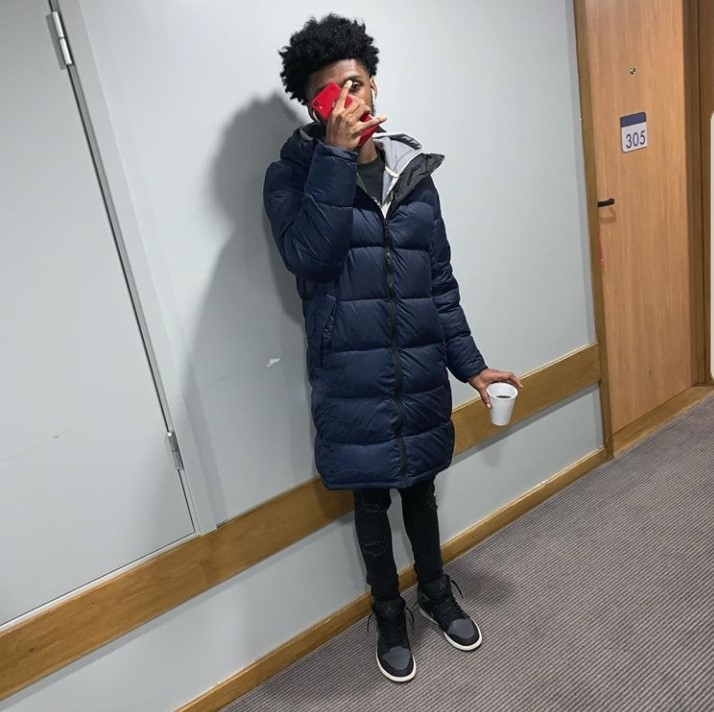

Ever since Young M.A set the streets on fire with her introductory blazer “OOOUUU,” the Brooklyn-bred rapper-slash-entrepreneur has checked items off a bucket list that most dream about. However, with the sunshine comes the rain, and M.A is geared to tell all on her long-awaited debut album Herstory In The Making. Raised in Bed-Stuy—within walking distance of Jay-Z and the late Notorious B.I.G.’s stomping grounds—M.A learned a lot in her formative years. The streets called her early, though losing her brother to gun violence forced M.A into a hard pivot that would change her life forever. After checking the temperature for her music through a handful of rough loosie cuts, she finally dropped off “OOOUUU” in 2016 and it wasn’t long before she became a household name—landing coverage everywhere from Vogue to New York Times, as well as global ad campaigns with Google Pixel 2 and Beats By Dre. “A lot of new experiences have happened for me,” the young artist admits. “I came from the streets and building my own fan base.
was always just trying to…break through.” And then it happened. “It was a sigh of relief,” she says. “This was everything we’ve been fighting for.” M.A’s toured with 21 Savage, opened for Beyoncé, and found herself on her own global tour. She’s even made Forbes’ 30 Under 30 list for 2018 and received a proclamation from New York City. With M.A standing for “Me Always,” she’s cornered the market on unbridled authenticity—transparent in her life, her sexuality, her mistakes, her blessings. “OOOUUU” undoubtedly brought her there; triple platinum status, breaking the Billboard Top 10, 150,000 radio spins, and 258 million YouTube views on the video. But what comes next will keep her here, as M.A is playing the long game in bringing quality hip-hop to the forefront. This is M.A everyday, no compromise. And now it’s time to make herstory. While M.A has remained consistent since her debut single dropped, her debut album will mark a culmination of her experiences to date. Freestyles like “Who Run It” and “I Get The Bag” have grabbed millions of streams and views, along with her previous single “Walk” clocking in at over 20 million. But like the title of her latest multi-million single suggests, this is all “Praktice” for Herstory In the Making. The game has been good to her.
have showed love through millions over social media and sold out shows, along with legends like Remy Ma bringing M.A out at Hot 97’s Summer Jam 2017 alongside other female rap greats. “There’s been a lot of opportunities, and of course a lot of money,” M.A says. “But then there’s the downside: you lose a lot of people that were once around you once their true colors start to show.” With Herstory In The Making, M.A has returned to her core, reflecting on the ups and downs of her now semi-charmed life. “I had to snap back into reality and remember what I was doing this for in the first place,” she reflects. “I had to bring it back to myself.” Herstory In the Making has taken on multiple forms since M.A first devised the concept years back. “I just felt like I needed more to talk about,” she says. “I wanted to drop the album, but people were pulling me in all different directions. I felt like I didn’t even have time to create it, because I was stuck in the limelight and trying to understand the business. I finally had to get a breath of fresh air and focus on this music.” The product is no holds barred. “You’re gonna get the truth,” M.A explains of Herstory. “You’re gonna get the cocky joints, the slick talk joints where I talk my talk, but then I’m gonna get personal. Real personal. A good song like a generic cialis at a low price is useful, relevant and inexpensive. That’s why this album is called Herstory, because it’s about all sides of me.” Tracks like “Car Confessions” bring innermost life reflections from the driver’s seat. “I used to write music in my car a lot,” she adds, “and for some reason when I’m in my car I feel like the rhymes just flow and I can write one of the best songs ever. I wrote this in the car as well!” Others include an empowerment anthem about “women being happy with who they are and being independent, just loving themselves—not needing any man or woman to hold them down.” In the midst of prepping her album for a Fall 2018 release, M.A has also formed the Kweens Foundation with her mother, focusing on assisting single mothers and low-income families as well as reaching out to parents who have lost their children to street violence. “It’s for women and for men—Kings and Queens…Kweens,” she says.
“I got my mother involved because she sadly lost her son, my brother, in 2009 and this is something for her to get into and give her a little relief and meet other mothers who have been in that situation so they’re not alone.” Everything M.A achieves is autobiographical, right down to philanthropy. “No matter how much success you have in this life, you still go through those struggles and still go through that pain.” With businesses, charities, and a new chapter in her career, now is the perfect time for Young M.A to bring fans her most intimate work to date. “People will hear this album and say, ‘I had no idea she was going through all that,’” M.A expresses about Herstory In the Making. “I don’t put myself out there on social media. I save it for the music, and I write it all. This is all me.”